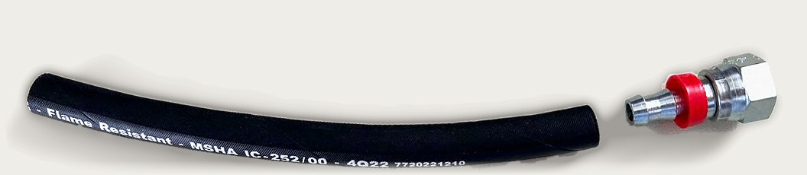
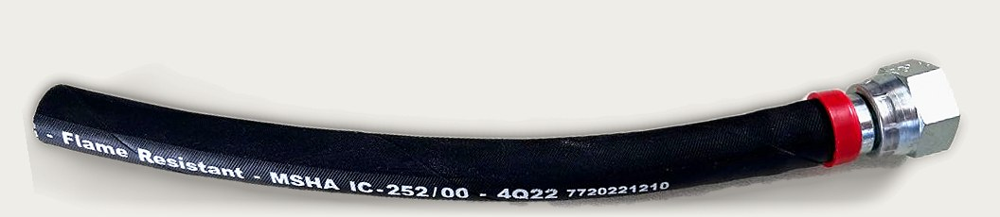
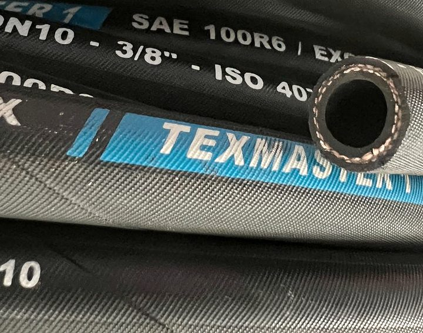
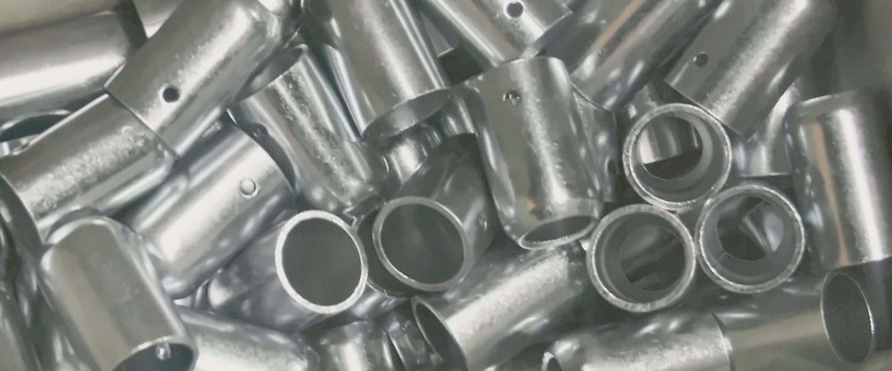
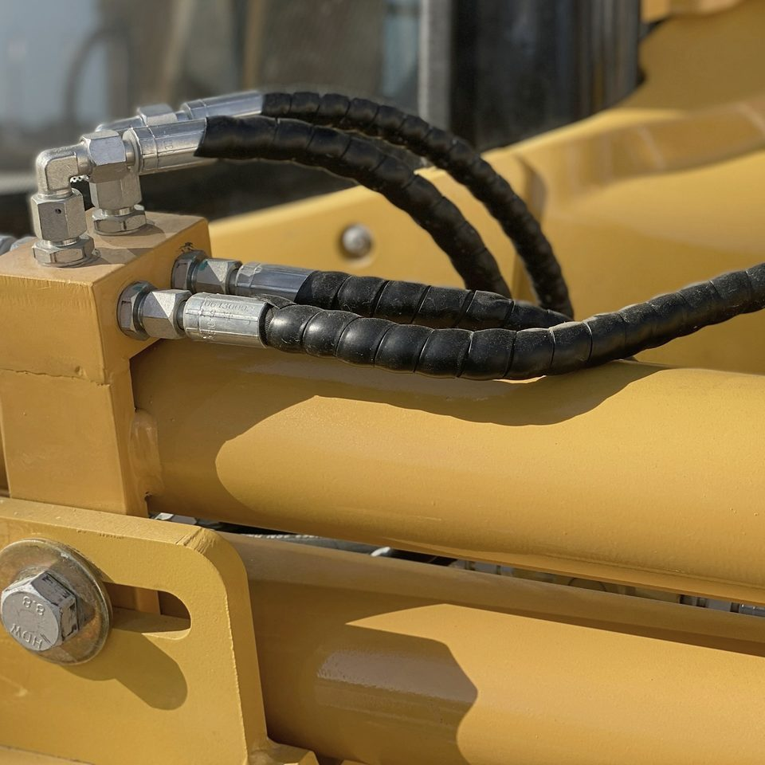

Tubi oleodinamici su misura

Tipologia il codice sulla guaina
Tubo e raccordo

Raccordatura
Lunghezza
Foto provvisoria F.R.A.M.O.: lo stesso tubo prima e dopo il montaggio di un raccordo Push Lock.
Officina e magazzino a Saonara, Padova, dal 1986. Su ordinazione o da campione, da 3/16" a 3".
Da 3/16" a 3"
Le tubazioni per alte e altissime pressioni, dal diametro di 3/16" fino a 3", sono la nostra specialità. Anche termoplastiche, inox e rigide, con la raccorderia adatta.
Scegli una misura: il cerchio giallo è il diametro interno, in scala con gli altri. DN indicativi, secondo le norme EN e SAE.
1"
- Nominale
- DN 25
Anche in termoplastico, con una o due trecce d'acciaio (1TD e 2TD) o con treccia tessile (R7).
Chiedi un tubo da 1"
Porti il tubo vecchio, esce un tubo nuovo
Vieni in azienda con il campione: in breve tempo i nostri operatori realizzano un nuovo tubo identico nella lunghezza, tipologia e raccordatura.
Se il tubo è ancora sulla macchina, manda la foto del tubo e dei raccordi su WhatsApp, con il codice stampato sulla guaina.
- Estremità / estremitàper i raccordi dritti
- Centro / centroper i raccordi curvi
- Sottocono / sottoconodal punto di tenuta del raccordo

600 mq di magazzino, accanto all'officina
Raccordi Rastelli DIN, GAS e JIC, innesti rapidi Faster, valvole Bosch Rexroth, distributori Walvoil, motori orbitali Danfoss; e poi elettrovalvole Atos e Hydac, pompe Marzocchi, accumulatori Fox, collari Pieffeci, pneumatica Univer e Waircom, funi d'acciaio a 8 e 9 trefoli. E le centraline, che progettiamo e assembliamo noi. Brochure prodotti
- 1986
- sul mercato, un'azienda indipendente a conduzione familiare
- Pronta consegna
- valvole, elettrovalvole, filtri, pompe e motori, funi, brache, cinghie, utensileria
Per officine, manutentori e industrie di Padova e del Nord Est: agricoltura, edilizia e movimento terra, industria.
Gli specialisti di Padova
- 049 644909, anche per le foto
- commerciale@framosrl.com
- Dove
- via Liguria 32, 35020 Saonara (PD)
- Orari
- dal lunedì al venerdì
8.30-12.30 e 14.00-18.00
